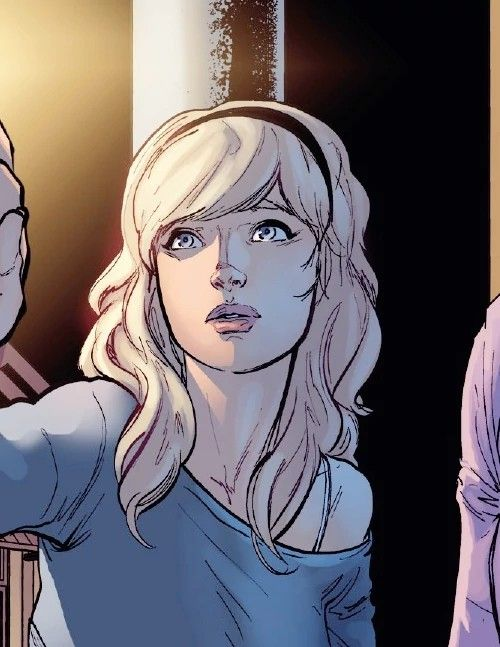

Historia
Spider-Man, cuyo nombre real es Peter Parker, es un superhéroe creado por el escritor Stan Lee y el dibujante Steve Ditko para Marvel Comics. Apareció por primera vez en Amazing Fantasy #15 en 1962. Tras ser mordido por una araña radiactiva, Peter adquirió habilidades sobrehumanas. Durante su vida tuvo personas muy importantes que lo marcaron como su tio Ben, tia May, Harry Osborn, y 3 de sus parejas mas conocidas que son Gwen Stacy, Mary Jane, Black Cat.





Poderes y Habilidades
- Sentido arácnido
- Fuerza sobrehumana
- Agilidad y reflejos mejorados
- Capacidad de adherirse a las paredes
- Intelecto de genio
Aliados y Enemigos
Aliados
- Mary Jane Watson: El gran amor de Peter Parker.
- Tia May: La tía cariñosa y apoyo emocional de Peter.
- Iron Man: Mentor y aliado en varias ocasiones.
- Black Cat: Amiga y a veces interés romántico.
Enemigos
- Green Goblin: Norman Osborn, uno de los villanos más icónicos.
- Doctor Octopus: Otto Octavius, un genio científico con tentáculos mecánicos.
- Venom: Eddie Brock, un rival con un simbionte alienígena.
- Sandman: Un criminal con la capacidad de transformarse en arena.
Multiverso de Spider-Man
El multiverso es un concepto que explora múltiples universos paralelos, cada uno con su propia versión de Spider-Man. Algunas versiones destacadas incluyen:
- Miles Morales: Un adolescente con habilidades similares a las de Peter Parker, originario de la serie Ultimate Marvel.
- Spider-Gwen: Gwen Stacy de un universo alternativo donde ella fue mordida por la araña radiactiva en lugar de Peter Parker.
- Spider-Man 2099: Miguel O'Hara, un genético en el futuro que se convierte en el Spider-Man del año 2099.
- Noir Spider-Man: Una versión de Spider-Man de los años 1930 con un estilo más oscuro y detectivesco.